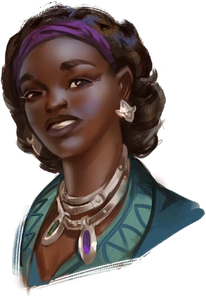
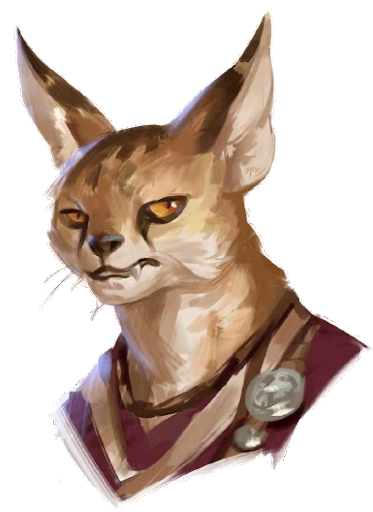
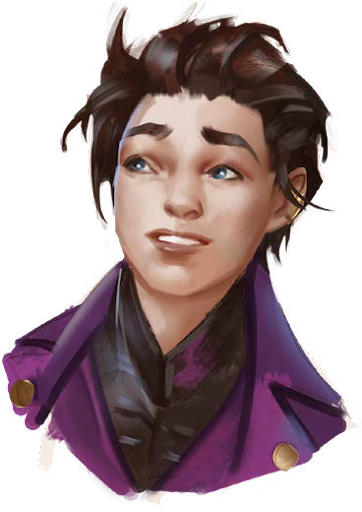
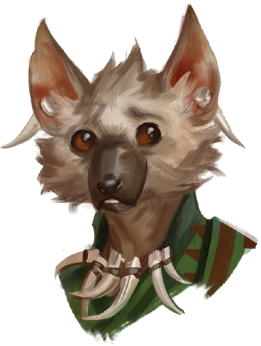

Studenti
Seleziona un elemento dalla barra laterale o scorri per visualizzare i dettagli dei vostri compagni di corso alla Magaambya.

Esi Djana
- Stirpe: Donna umana, studente top
- Vi ha accompagnati al Dormitorio della Guglia e vi ha presentato gli altri studenti.

Chizire
- Stirpe: Catfolk (Amurrun) maschio, pigrone
- Distilla vini e liquori nella sua stanza.

Ignaci Canterelle
- Stirpe: Uomo umano, alchimista
- Produce e vende oggetti alchemici.
- Vi ha invitati alle serate gioco del Dormitorio.

Anchor Root
- Stirpe: Donna Kholo, timida e ansiosa
- L'avete vista mentre conduceva una gallina attaccata ad un bastone a caccia di insetti.
- Molto ansiosa, appena vi ha visti si è nascosta per non essere vista.